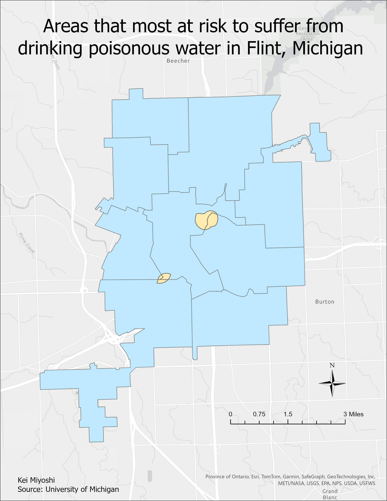

My 3 best maps!

This map shows who has the lead in each Pennsylvania county, Trump (Red) or Biden (Blue). This map changes in saturation depending on how much Biden or Trump wins or loses. The darker the red, the more Trump is in favor; the darker the blue, the more Biden is in favor. It can be seen that Trump is more popular than Biden in Pennsylvania.
GIS Tools/Skills - Add Join - Add Field - Symbology4 different global projected CRSes

The map depicts various projections of the world, each with its own strengths and weaknesses. The Robinson projection, for instance, is a compromise between accuracy and visual appeal, while the Fuller projection is a cylindrical projection that preserves area but distorts shapes near the poles. The Mercator projection, though popular, famously exaggerates the size of landmasses near the poles. The Goode Homolosine projection, on the other hand, is a compromise between the Mercator and the interrupted sinusoidal projections, aiming to minimize distortion while accurately representing landmasses. GIS Tools/Skills - Coordinate System 
This map highlights the areas in Flint, Michigan that are most at risk of exposure to lead-contaminated water. This map helps to visualize the regional differences in pollution, where certain areas are more severely affected than others. Identifying these areas helps us to understand the severity of the crisis and to focus resources and support on the areas that need it most. It can also serve as a powerful tool for highlighting disparities in access to safe drinking water and raising awareness of the need for urgent remedial action. GIS Tools/Skills - Add Join - Data - Select by Attributes - Buffer - Intersect